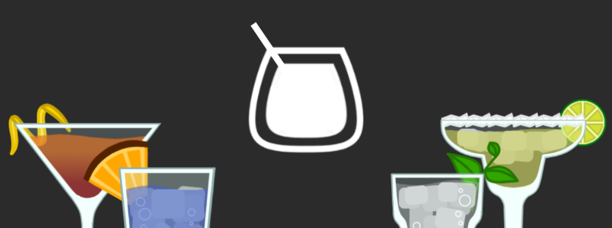

BarBack
Everyone has that moment at the bar when the bartender asks, "What can I get you?" Most lean towards the tried and true, and the few daring enough to ask for a recommendation usually get hit with the most expensive drink on the cocktail menu.
Save yourself with BarBack: the ultimate application for finding your next favorite cocktail. BarBack can recommend you drinks based on your personal preferences. Strong, sweet, and fruity? BarBack has you covered. Smooth and Savory? There’s a drink for that. You’ve had a Rum & Coke a thousand times, time to try something new!
BarBack is your personal bar assistant in the palm of your hand. Featuring a fun, comprehensive, and expandable recipe book and inventory manager, BarBack not only shows you how to make drinks step but step, but also can show you the drinks you can make with what you have at home. Missing a Champagne Flute? No problem, BarBack is able to make smart substitutions based on what you have at hand. Covering everything from glasses to garnishes, BarBack goes a step further by giving you recipes that is brand agnostic - BarBack doesn’t care what brand of rum you have, just that you have it.
Get it for free on Google Play!